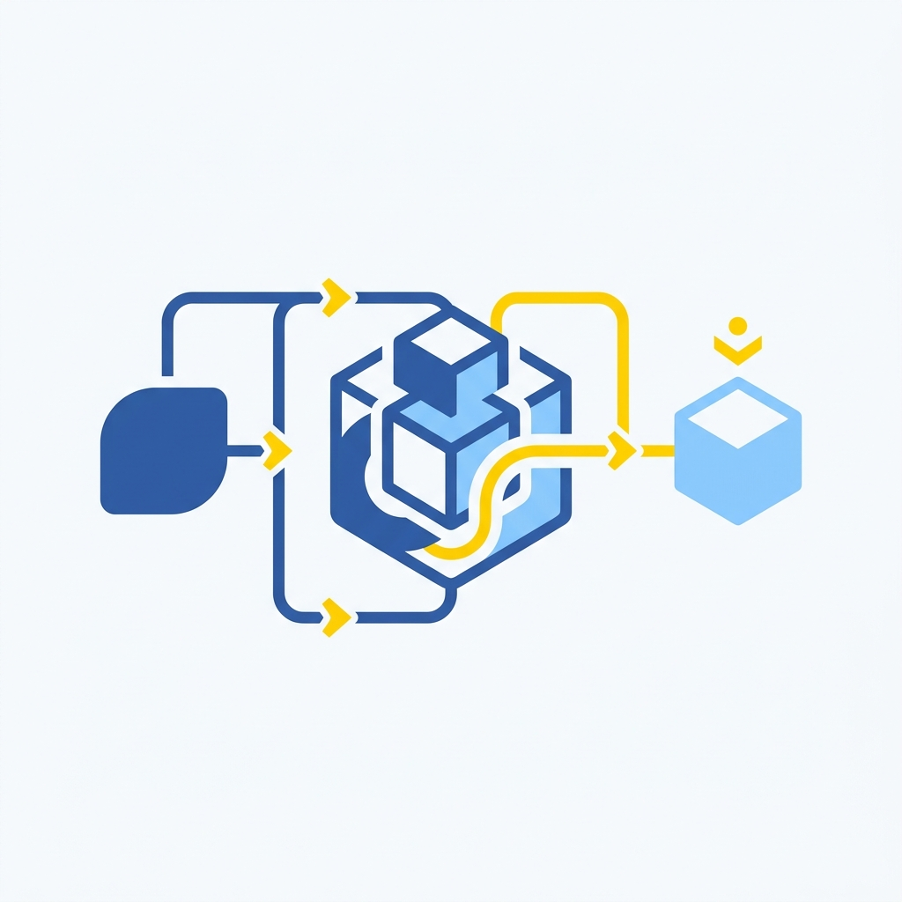
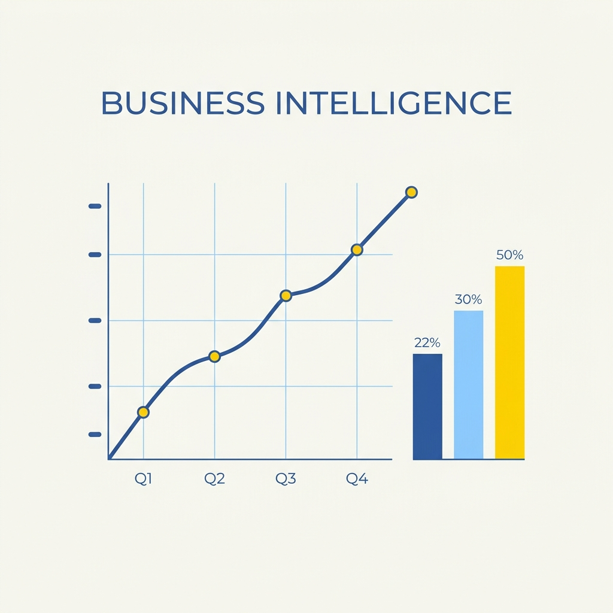

Hey there! I'm
Anshal Chopra
I build the infrastructure that turns raw data into reliable, actionable business intelligence, from cloud pipelines to self-serve dashboards.
Analytics Engineer with hands-on experience across the modern data stack, Snowflake, dbt, Airflow, Power BI, and AWS. I design scalable ETL pipelines, optimize warehouse performance, and deliver dashboards that stakeholders actually trust. Whether it's cutting query runtimes or automating reporting workflows that save multi-figures annually, I ship data solutions that move metrics.
What I work with
Technical Skills
 Tableau
TableauWhere I've been
Experience
Data Strategy Consultant
Simon Fraser University — Slalom Consulting- Conducted exploratory analysis on 1M+ youth service records using PCA to reduce 120 variables to 20 key drivers, informing a Random Forest model predicting housing stability outcomes.
- Built survival analysis models that identified intervention points, contributing to a 15% improvement in client retention metrics within a six-month evaluation window.
- Designed and delivered a Tableau KPI dashboard that enabled non-profit leadership to monitor program effectiveness and drove adoption of two data-informed intake protocols.
Business Intelligence Analyst
Canadian Tire Corporation- Designed a normalized 3NF SQL schema to migrate transportation operations data from legacy flat-files, enforcing referential integrity constraints that underpinned real-time Power BI dashboards used by logistics teams.
- Re-engineered Bill of Lading validation logic through targeted SQL indexing and join restructuring, cutting query runtime from 20 minutes to under 3 minutes — an 85% reduction.
- Automated ETL workflows across Python, SQL, and Azure Data Factory, eliminating manual reporting cycles and delivering $50k+ in annual operational savings.
Data Analyst — Analytics & Modeling
Data Sciences Inc.- Engineered an end-to-end ML data pipeline on 8M+ records with automated feature engineering and SMOTE class balancing, improving Random Forest and XGBoost ensemble performance by 4% AUC.
- Built a layered Shopify transaction data model with optimized SQL joins and indexes, reducing BI report latency by 30% and query payload by 25%.
- Developed fault-tolerant web scraping pipelines in Scrapy with dynamic proxy rotation across 15+ sources, replacing 80% of previously manual data collection workflows.
Research Analyst
Simon Fraser University- Cleaned and standardized 10K+ rows of unstructured clinical text using Python regex pipelines, structuring data for downstream statistical analysis.
- Deployed AWS Comprehend via Boto3 to perform sentiment classification on medical review datasets, producing structured output reports for research team consumption.
B.Sc. (Co-op) — Major in Data Science
Simon Fraser University- Relevant coursework: Database Systems, Big Data Engineering, NLP, Time-Series Forecasting, Statistical Learning, and Business Process Analysis.
- Led SQL and Python workshops as an active member of the Data Science Student Society.
Things I've built
Projects
Real-Time Retail Analytics Engine
Streaming POS events via Kafka into dbt transformation layers, surfacing a live Streamlit dashboard at 50k events/min with sub-second latency.
Customer Churn Prediction
Production-grade churn classifier achieving AUC 0.91 on a 2M-row telecom dataset, served via FastAPI with a SHAP explainability endpoint.
Academic Paper Summariser
Fine-tuned BART on an arXiv corpus for structured, jargon-aware academic summaries. Deployed as a public Streamlit app with 300+ monthly users.
dbt Semantic Layer Implementation
Migrated a 300-model legacy warehouse to a dbt semantic layer, cutting BI query duplication by 60% and analyst onboarding from 3 weeks to 4 days.
Demand Forecasting with Prophet
Weekly demand forecasts for 200+ SKUs using Prophet with holiday regressors and multiplicative seasonality, orchestrated with zero-touch Airflow retraining.
Interview Prep Chatbot
RAG chatbot ingesting résumé and job description to simulate behavioural interviews with structured STAR-method feedback after each response.
What I write about
Blogs
Building a Scalable Data Pipeline
Designing fault-tolerant ETL pipelines with Airflow: schema evolution strategies, production observability, pipeline idempotency, and cost optimisation.
Demystifying Gradient Boosting
From bias-variance tradeoff to XGBoost hyperparameter tuning — a practical guide to how boosting ensembles learn, where they fail, and how to debug them.
SQL Window Functions Explained
RANK, LAG, LEAD, and NTILE with real-world business cases and annotated SQL examples that unlock powerful analytical queries for modern data practitioners.
Causal Inference for Analysts
DiD, Instrumental Variables, and Regression Discontinuity designs that let you draw complex causal conclusions from everyday observational business datasets.
dbt: The Analyst's Best Friend
Version-controlled SQL models, automated testing, and lineage graphs — a walkthrough for moving from ad-hoc queries to collaborative data modeling.
Data Strategy for Growing Startups
The minimal viable data stack — from event tracking to a first warehouse — that lets a small team move with the velocity of a much larger organisation.
Get in touch
Let's Connect
Open to full-time roles in analytics engineering, business intelligence, and cloud data infrastructure. Based in Vancouver and available to start immediately.